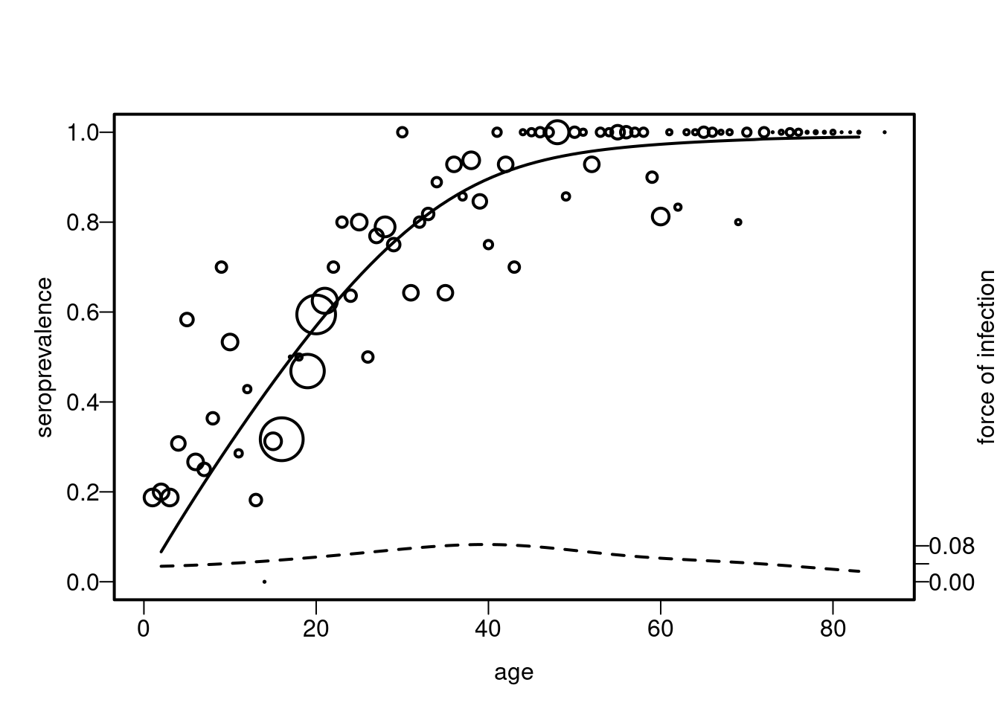
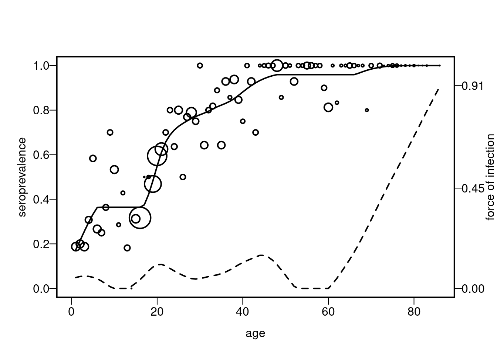

pavit<- function(pos=pos,tot=rep(1,length(pos)))
{
gi<- pos/tot
pai1 <- pai2 <- gi
N <- length(pai1)
ni<-tot
for(i in 1:(N - 1)) {
if(pai2[i] > pai2[i + 1]) {
pool <- (ni[i]*pai1[i] + ni[i+1]*pai1[i + 1])/(ni[i]+ni[i+1])
pai2[i:(i + 1)] <- pool
k <- i + 1
for(j in (k - 1):1) {
if(pai2[j] > pai2[k]) {
pool.2 <- sum(ni[j:k]*pai1[j:k])/(sum(ni[j:k]))
pai2[j:k] <- pool.2
}
}
}
}
return(list(pai1=pai1,pai2=pai2))
}
foi.num<-function(x,p)
{
grid<-sort(unique(x))
pgrid<-(p[order(x)])[duplicated(sort(x))==F]
dp<-diff(pgrid)/diff(grid)
foi<-approx((grid[-1]+grid[-length(grid)])/2,dp,grid[c(-1,-length(grid))])$y/(1-pgrid[c(-1,-length(grid))])
return(list(grid=grid[c(-1,-length(grid))],foi=foi))
}
#' Keiding model
#'
#' @param age the age vector
#' @param pos the positive vector
#' @param tot the total vector
#' @param kernel kernel-based estimate
#' @param bw bandwidth
#'
#'
#' @examples
#' df <- hav_bg_1964
#' model <- keiding_model(df$age,df$pos,df$tot, kernel = "normal", bw = 30)
#' plot(model)
keiding_model <- function(age, pos, tot,kernel ="normal", bw){
grid <- sort(age)
model <- list()
xx <- pavit(pos=pos,tot=tot)
foi.k1<-foi.num(grid,xx$pai2)$foi
foi.k1[is.na(foi.k1)]<-0
foi.k1[foi.k1>10]<-0
age.k1<-foi.num(grid,xx$pai2)$grid
fit.k1<- ksmooth(age.k1,foi.k1,kernel=kernel,bandwidth=bw,n.points=length(age.k1))
model$age <- fit.k1$x
model$foi <- fit.k1$y
model$sp <- 1-exp(-cumsum(c(age.k1[1],diff(age.k1))*model$foi))
model$df <- list(age=age, pos=pos, tot=tot,grid = grid)
class(model) <- "keiding_model"
model
}
#' plot() overloading Keiding model
#'
#' @param x the keiding model object.
#' @param ... arbitrary params
#'
#'
#' @export
plot.keiding_model <- function(x, ...) {
CEX_SCALER <- 4 # arbitrary number for better visual
with(x$df, {
par(las=1,cex.axis=1,cex.lab=1,lwd=2,mgp=c(2, 0.5, 0),mar=c(4,4,4,3))
plot(
grid,
pos/tot,
cex=CEX_SCALER*tot/max(tot),
xlab="age", ylab="seroprevalence",
xlim=c(0, max(age)), ylim=c(0,1)
)
lines(x$age, x$sp, lwd=2)
lines(x$age, x$foi, lwd=2, lty=2)
axis(side=4, at=round(seq(0.0, max(x$foi), length.out=3), 2))
mtext(side=4, "force of infection", las=3, line=2)
})
}chapter 9
Chapter 9.3.2 Keiding
library(serosv)
df <- hav_bg_1964
model <- keiding_model(df$age,df$pos,df$tot, kernel = "normal", bw = 30)
str(model)List of 4
$ age: num [1:81] 2 3.01 4.03 5.04 6.05 ...
$ foi: num [1:81] 0.0345 0.035 0.0356 0.0363 0.0371 ...
$ sp : num [1:81] 0.0666 0.0988 0.1303 0.1613 0.1919 ...
$ df :List of 4
..$ age : int [1:83] 1 2 3 4 5 6 7 8 9 10 ...
..$ pos : int [1:83] 3 3 3 4 7 4 3 4 7 8 ...
..$ tot : int [1:83] 16 15 16 13 12 15 12 11 10 15 ...
..$ grid: int [1:83] 1 2 3 4 5 6 7 8 9 10 ...
- attr(*, "class")= chr "keiding_model"plot(model)
Test function keiding model
library(testthat)
test_that("keiding_model returns expected results", {
expected_foi_summary <- c(0.02330453, 0.05276397, 0.05504527, 0.08295355)
expected_sp_summary <- c(0.06664893, 0.9155623, 0.7704096, 0.9892495)
df <- hav_bg_1964
model <- keiding_model(
df$age,df$pos,df$tot,
kernel = "normal", bw = 30)
actual_foi_summary <- c(
min(model$foi), median(model$foi), mean(model$foi), max(model$foi)
)
actual_sp_summary <- c(
min(model$sp), median(model$sp), mean(model$sp), max(model$sp)
)
expect_equal(actual_foi_summary, expected_foi_summary, tolerance=0.000001)
expect_equal(actual_sp_summary, expected_sp_summary, tolerance=0.000001)
})Test passed 🌈9.3.3 Smooth then constrain
library(locfit)locfit 1.5-9.8 2023-06-11pavit<- function(pos=pos,tot=rep(1,length(pos)))
{
gi<- pos/tot
pai1 <- pai2 <- gi
N <- length(pai1)
ni<-tot
for(i in 1:(N - 1)) {
if(pai2[i] > pai2[i + 1]) {
pool <- (ni[i]*pai1[i] + ni[i+1]*pai1[i + 1])/(ni[i]+ni[i+1])
pai2[i:(i + 1)] <- pool
k <- i + 1
for(j in (k - 1):1) {
if(pai2[j] > pai2[k]) {
pool.2 <- sum(ni[j:k]*pai1[j:k])/(sum(ni[j:k]))
pai2[j:k] <- pool.2
}
}
}
}
return(list(pai1=pai1,pai2=pai2))
}
#' Returns the optimal smoothing parameter of GCV
#'
#' Refers to section 9.3.3.
#' @param age the age vector
#' @param pos the positive vector
#' @param tot the total vector
#' @param alphagrid a alpha sequence
#' @param family family of gcvplot. Default to "binomal"
#' @param deg degree of gcvplot
#'
#' @examples
#' df <- hav_bg_1964
#' find_the_min_alpha(df$age,df$pos,df$tot,
#' seq(0.2,2, by=0.05),family = "binomial", deg =2)
find_the_min_alpha <- function(age,pos,tot,alphagrid, family = "binomial",deg){
neg <- tot - pos
a<-c(rep(age,pos),rep(age,neg))
y<-c(rep(rep(1,length(age)),pos),rep(rep(0,length(age)),neg))
gcvp<-gcvplot(y~a,family="binomial",alpha= alphagrid,deg = deg)
alpha<-alphagrid[which.min(gcvp$values)]
alpha
}
#' A Smooth then constrain model
#'
#' @param age the age vector
#' @param pos the positive vector
#' @param tot the total vector
#' @param alpha alpha of local fit
#' @param family family of local fit
#'
#' @examples
#' df <- hav_bg_1964
#' model <- stc(df$age,df$pos,df$tot,
#' alpha = 0.35,family = "binomial")
stc <- function(age,pos,tot,alpha,family = "binomial"){
neg <- tot - pos
grid <- sort(age)
model <- list()
a<-c(rep(age,pos),rep(age,neg))
y<-c(rep(rep(1,length(age)),pos),rep(rep(0,length(age)),neg))
y<-y[order(a)]
a<-a[order(a)]
lpfit1 <- locfit(y~a,family= family ,alpha=alpha)
lpfitd1 <- locfit(y~a,deriv=1,family= family,alpha=alpha)
lpfoi1 <- fitted(lpfitd1)*fitted(lpfit1)
model$sp <- pavit(pos=fitted(lpfit1))$pai2
lpfoi2 <- apply(cbind(0,fitted(lpfitd1)),1,max)*model$sp
model$foi <- apply(cbind(0,lpfoi2),1,max)
model$df <- list(age=age, pos=pos, tot = tot, grid = grid ,a=a )
class(model) <- "smooth_then_constrain_model"
model
}
model <- stc(df$age,df$pos,df$tot,
alpha = 0.35,family = "binomial")
plot.smooth_then_constrain_model <- function(x, ...) {
CEX_SCALER <- 4 # arbitrary number for better visual
with(x$df, {
par(las=1,cex.axis=1,cex.lab=1,lwd=2,mgp=c(2, 0.5, 0),mar=c(4,4,4,3))
plot(
grid,
pos/tot,
cex=CEX_SCALER*tot/max(tot),
xlab="age", ylab="seroprevalence",
xlim=c(0, max(age)), ylim=c(0,1)
)
lines(x$df$a,x$sp,lty=1)
lines(x$df$a,x$foi,lwd=2, lty=2)
axis(side=4, at=round(seq(0.0, max(x$foi), length.out=3), 2))
mtext(side=4, "force of infection", las=3, line=2)
})
}df <- hav_bg_1964
model1 <- stc(df$age,df$pos,df$tot,
alpha = 0.35,family = "binomial")
str(model1)List of 3
$ sp : num [1:850] 0.174 0.174 0.174 0.174 0.174 ...
$ foi: num [1:850] 0.0489 0.0489 0.0489 0.0489 0.0489 ...
$ df :List of 5
..$ age : int [1:83] 1 2 3 4 5 6 7 8 9 10 ...
..$ pos : int [1:83] 3 3 3 4 7 4 3 4 7 8 ...
..$ tot : int [1:83] 16 15 16 13 12 15 12 11 10 15 ...
..$ grid: int [1:83] 1 2 3 4 5 6 7 8 9 10 ...
..$ a : int [1:850] 1 1 1 1 1 1 1 1 1 1 ...
- attr(*, "class")= chr "smooth_then_constrain_model"plot(model1)
test smooth then constrain model
library(testthat)
test_that("smooth_then_constrain_model returns expected results", {
expected_foi_summary <- c(0, 0.05875577, 0.09195305, 0.9057742)
expected_sp_summary <- c(0.1736335, 0.7792654, 0.6995438, 0.9999992)
df <- hav_bg_1964
model <- stc(df$age,df$pos,df$tot,
alpha = 0.35,family = "binomial")
actual_foi_summary <- c(
min(model$foi), median(model$foi), mean(model$foi), max(model$foi)
)
actual_sp_summary <- c(
min(model$sp), median(model$sp), mean(model$sp), max(model$sp)
)
expect_equal(actual_foi_summary, expected_foi_summary, tolerance=0.000001)
expect_equal(actual_sp_summary, expected_sp_summary, tolerance=0.000001)
})Test passed 🥇